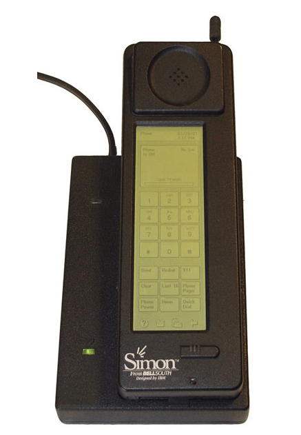

Década de 1990
A década de 1990 viu o crescimento vertiginoso de mecanismos de busca como Wanderer, Altavista e Google, bem como da World Wide Web e ferramentas associadas como os navegadores Mosaic, Netscape e Internet Explorer. Se os anos 1980 foram marcados pelas guerras dos clones contra a IBM, os anos 1990 foram marcados pelas guerras dos navegadores, chegando a dividir a Microsoft em duas empresas.
Várias novas linguagens de programação específicas da Web surgiram durante esse período, incluindo Java, PHP, Python, Ruby e JavaScript. A década de 1990 também viu a miniaturização dos dispositivos de computação com o advento de palmtops como o Pilot e os primeiros smartphones chamados de Simon. Além disso, o advento dos pendrives tornou o armazenamento de dados menor.
Para finalizar com a "Chave de Ouro", percebe-se que o mundo já não é mais o mesmo com o famoso "Bug do Milênio". Esta é uma demonstração perfeita de que a sociedade já está à mercê da informática e de seus erros.
Linguagens de Progamação
Python: foi criado por Guido van Rossum em 1991. A intenção era criar uma linguagem de programação que pudesse ser ensinada a usuários de computador especializados, como físicos, matemáticos, linguistas, etc. Python é uma linguagem extensível a quaisquer futuros usuários, que podem adicionar novos recursos conforme a necessidade.

Java: foi um projeto liderado por James Gosling em 1995. Partiu-se da perspectiva de que a próxima grande tendência no desenvolvimento de sistemas seria a junção delinguagens adequadas para esse tipo de desenvolvimento, diz Gosling. Java agora é usado em mais de 100 milhões de computadores em todo o mundo.

PHP: foi criado por Rasmus Lerdorf em 1995. Ele foi usado para incorporar código programável no código HTML que definia uma página da Web. Ao invés de ter os programas separados das definições das páginas, tudo ficou junto em um único arquivo, inclusive os comandos SQL que acessam bancos de dados

SIMON PERSONAL COMMUNICATION (1994)
O Simon era vendido a 899 dólares com um plano de telefonia de dois anos e 1099 sem este plano. Cerca de 50 mil foram vendidos na época. O Simon Personal Communicator era um telefone celular desenvolvido em parceria pela IBM e a BellSouth Celular. Além da função normal de telefone, possuía uma tela touchscreen monocromática com ícones que podiam ser tocados por um apontador, os quais permitiam acessar aplicativos como e-mail, calculadora, calendário, relógio e o jogo Scramble (quebra-cabeça de oito). Além disso, podia ser acoplado a uma câmera, um tocador de música e mapas eletrônicos.
O Simon, porém, estava muito à frente de seu tempo. Para que ele se tornasse o sucesso que foram os iPhones anos mais tarde faltavam ainda algumas tecnologias. Entre elas, bateria: com uso intensivo de dados, ela não durava mais de 60 minutos, e em uma área com cobertura de sinal fraca, que era a realidade da maioria dos lugares.
Celular Simon de 1994
NetsCape 1994
Netscape era o browser mais usado nos anos 90, podemos compará-lo com o Google de hoje em dia para àquela época
Pagina inicial da netscape
O NetsCape já era estimado na época por um valor equivalente de 3 Bilhões de Dólares. Microsoft com o intuito de também entrar nesse mercado promissor, criou o internet explorer, a qual tinha todas as funcionalidades do Netscape. Nesse sentido, a Netscape, em 1996, criou uma versão atualizada do browser, o que acrescentava algumas coisas mais, como, o correio eletrônico.
Em 1998, a Netscape resolveu abrir o código fonte do Communicator, iniciando assim a organização Mozilla, que futuramente desenvolveria o Firefox. Assim, nesse mesmo ano, a Netscape deu uma pausa nas inovações, e a Microsoft passou a frente.
USB
Em 1995, surgia pela primeira vez a entrada USB, com a parceria de algumas empresas importantes no mercado, criaram a entrada com o intuito de estabelecer um meio de comunicação de um dispositivo com o computador, como, impressoras, mouse, fonte para carregamento.
GOOGLE 1998:
O maior navegador que conhecemos até hoje surgia em 1998, pelos criadores Larry Page e Sergey Brinn, ainda estudantes em Stanford, os dois decidiram desenvolver um projeto juntos. Ela fornecia um mecanismo de busca diferente dos demais browser, o que atraiu muitas pessoas. A diferença era que as buscas que tinha mais interaçções pelos usuários seriam as páginas que apareceriam no topo, assim, o comportamento em geral dos usuários da internet que ditava o que apareceria.
IMAC 1998:
Os computadores na época tinha um design muito recaído, os conteiner eram bege e retangulares. A apple em 1998 estava caindo de produção dos seus Macintosh, os PC dominavam o mercado. A Apple então decidiu inaugurar algo que atraisse a atenção do publico, esse foi o IMAC.
IMAC 1998
Possuía facilidade no acesso à internet (algo raro na época), iMac original, conhecido como modelo G3, foi o primeiro computador comercial a ser considerado “legacy free”46 porque ele não tinha mais drive de disquete, apenas de CD, e também só possuía portas USB em detrimento das antigas RS 232
Computador IMAC G4
Em 2002, Jobs lança uma atualização que também agradou o público. O IMAC G4. Percebe-se que o anos 1900 foi marcado pela conectividade entre os computadores, possibilitados pela World Wide Web e os navegadores. Isso viria a influenciar e contribuir muito ao uso dos celulares. Surgiram também as linguagens de programação adaptadas para ela como Java, PHP e JavaScript.
Novos modelos de negócio baseados na Web surgiram, como a Amazon, o Google, o eBay e o Napster. Usuários começaram a escrever seus blogs. Em termos de comunicação, merece destaque a criação do padrão Wi-Fi, uma forma barata e eficiente de acessar a rede.